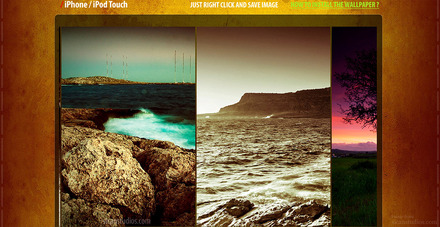
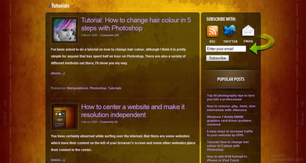
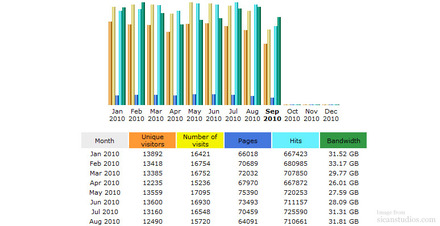
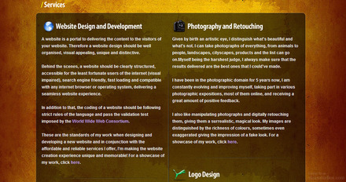

With this new design, I tried to steer away from the Web 2.0 look that the previous SicanStudios versions had and I adopted a more grunge, textured look. This version of SicanStudios was the most complete and complex of all. It lasted a total of one year and a half. It was partially implemented using WordPress. Basically, the “blog” section of the website was supported by WordPress. It was also my first time developing a theme for WordPress. I had to re-create the existing design of the website into a WordPress theme in order to blend seamlessly with the other sections of the website.
I also started sharing more, and created a section where you could download iPhone/iPod Touch wallpapers for free. Wallpapers were updated more often with new content and I was getting links from many websites referring my wallpapers. Of course this kind of exposure had its disadvantage. People began exploiting this freebie that I was offering, placing the wallpapers as background images in their MySpace layouts, editing them, copying them and posting them elsewhere without my consent.

For the "blog" section of the website, I wanted to help people in any topic. I wrote tutorials on how to change hair colour in Photoshop, how to remove .php, .html extensions, how to solve windows 7 graphics card problem, how to increase website traffic and many more.

During its life, the blog accumulated a total of 282 comments. SicanStudios in that form, before the update in September received around 13,000 unique visitors every month adding the total number of unique visitors for 2010 (until mid-September 2010) to 115,963.

The background image was created using brush sets in Photoshop. For the logo of the website, I did nothing more than to throw a font, add some Photoshop effects to it like all the other version of SicanStudios. A more professional approach was accomplished with the services pages (present in all the versions of SicanStudios) being extended and more detailed.

Furthermore, the home page was improved and all new content could be found by visiting only the home page of the site, without needing to search through the site. Each new website design was highlighted with the use of a slider JavaScript placed right after the welcome text.
Many new features were added to this version of the website. Features such as a search box, latest tweets, popular blog posts, RSS and Email subscription were omnipresent in this version. These continue to exist in the current version of SicanStudios.
{kind=link}
{kind=link}
{kind=link}
{kind=link}
{kind=link}
{kind=link}
{kind=link}